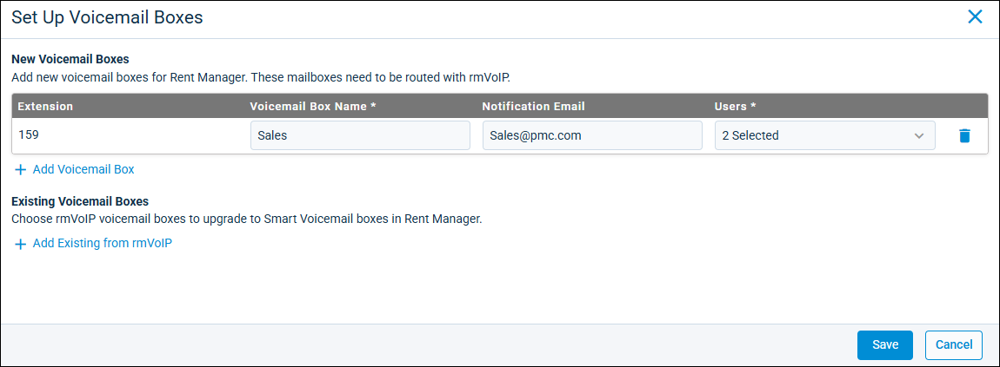
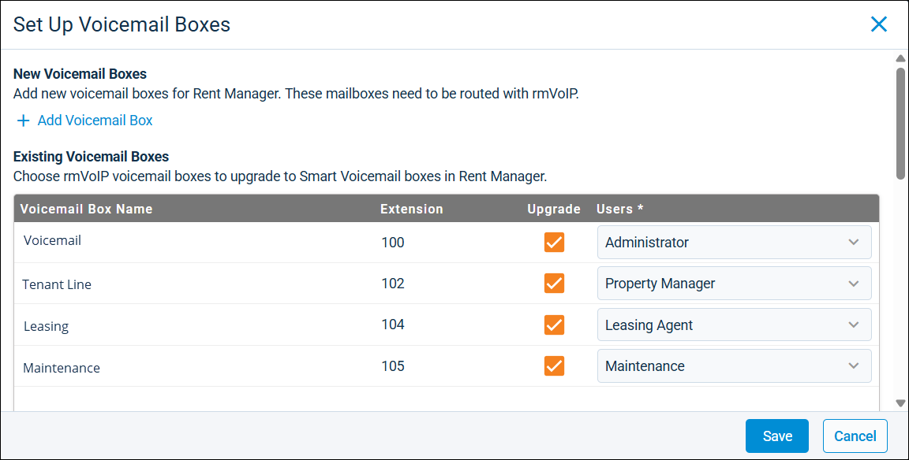

Source: https://rmxhelp.rentmanager.com/Topics/Express/Other/Orion-Smart-Voicemails-Set-Up.htm
Set Up Smart Voicemails
The Smart Voicemails feature brings rmVoIP together with Orion AI to allow you to manage your voicemails all in one spot in Rent Manager. Once you set up your Smart Voicemail boxes (either brand new ones or existing ones pulled in from your NDT Portal), voicemails associated with the extensions on the voicemail boxes are available in Rent Manager. Orion AI provides a transcript and a status for the voicemail, providing you with a quick overview of the message. You can listen to the voicemail recordings, and each voicemail has a category and a priority, allowing you to follow up effectively manage your voicemail load as to not let callbacks fall through the cracks.
Related Privileges
| Group | Privilege | Column |
|---|---|---|
| Phone System | Smart Voicemails | View, Edit |
| Smart Voicemail Boxes | Add, View, Edit |
Additionally, the user must have a valid extension listed on their user details page in the rmVoIP Extension field.
For more information, refer to Control User Access.
More Information
This feature requires the license for rmVoIP and the Smart Voicemails license, which must be purchased separately. For more information, contact your sales representative at sales@rentmanager.com.
This initial set up process occurs only the first time you access Smart Voicemails. If you already set up your initial voicemail boxes, and want to add more, refer to Manage Orion Smart Voicemail Boxes.
Step 1: Get Started with Smart Voicemails
To begin the process of setting up Smart Voicemails, do the following:
-
Go to
 arrow_forward Communication arrow_forward Texting/Phone arrow_forward Smart Voicemails.
arrow_forward Communication arrow_forward Texting/Phone arrow_forward Smart Voicemails.
The initial Smart Voicemails page displays. -
Click Set Up Voicemail Boxes.
The Set Up Voicemail Boxes pop-up displays. -
Select one of the following options:
Option Description Add Voicemail Box
Set up a new voicemail box for Smart Voicemails.
Add Existing from rmVoIP
Convert an existing rmVoIP voicemail box into a Smart Voicemail box.
The log-in pop-up displays.
-
Enter the same username and password you use to log into your NDT Portal.
More Information
If you're unable to remember your password, click Forgot your password? and enter your email address. If a user account is found with the email address, an email with instructions on how to reset your password is sent to the associated email address.
-
Click Sign In.
Step 2: Add Voicemail Boxes
There are two different options for adding Smart Voicemail boxes: creating a brand new voicemail box or taking existing voicemail boxes from your NDT Portal and converting them to Smart Voicemail boxes. You can choose to add only new, convert only existing, or a combination of both.
Add New Voicemail Box
Create new Smart Voicemail boxes to review summaries and listen to missed calls.

To set up a new voicemail box, do the following:
-
Click
 Add Voicemail Box.
Add Voicemail Box.
A table for your new voicemail box displays. If you selected this option in the steps above before signing in, the table displays automatically. -
An Extension is automatically assigned to the new voicemail box. Enter the following information about the voicemail box:
Field Description Voicemail Box Name
The unique name of the voicemail box that identifies what calls are meant to be categorized there, such as Sales or Maintenance.
Notification Email
The email address to receive notifications when a new voicemail is left, as well as a copy of the voicemail attached to the email.
Users
The users and/or user roles with access to the calls in the voicemail box.
-
To add another new voicemail box,
Add Voicemail Box and enter information into the applicable fields. Repeat the process for as many new voicemail boxes as needed.
Add Existing Voicemail Boxes
If you have voicemail boxes set up in your NDT Portal, you can convert them into a Smart Voicemail box. By doing so, all future voicemails that come into the voicemail box are available only in Rent Manager Express. The voicemail boxes are still visible in the NDT Portal for the purposes of routing voicemails from NDT to Rent Manager Express and to add recorded prompts that play when the voicemail box is reached.

To set up a voicemail box that already exists, do the following:
-
Click
Add Existing from rmVoIP.
A table for your existing rmVoIP voicemail boxes displays and Rent Manager pulls in the Voicemail Box Name and Extension as they are listed in your NDT Portal. If you selected this option in the steps above before signing in, the table displays automatically.More Information
Smart Voicemail boxes are specific to the Rent Manager locations they are set up in. If an NDT voicemail box was already converted to a Smart Voicemail box in a different location, it does not pull into the list of available existing voicemail boxes.
-
In the Upgrade column, check each voicemail box you want to convert into a Smart Voicemail box.
-
For each voicemail box being upgraded, select the Users and/or user roles allowed to access to the calls in the voicemail box.
Step 3: Save Voicemail Box Setup
Once you added all the new and existing voicemail boxes needed, click Save. If you added any existing voicemail boxes, on the Upgrade Existing Voicemail Boxes, click Upgrade to confirm converting the rmVoIP voicemail boxes to Smart Voicemail boxes.
Next Steps
Now that you have set up your initial Smart Voicemail boxes, voicemails associated with those extension numbers are routed directly to the Smart Voicemails page. For more information on what steps you can take from here, refer to the table below:
| Step | Description |
|---|---|
|
Smart Voicemails |
The listing page that houses all the voicemails that come into any Smart Voicemail boxes the user has access to. For more information, refer to Orion Smart Voicemails. |
|
Voicemail Details |
Listen to the voicemail and view the audio transcript and Status provided by Orion AI. You can assign categories and priorities to the voicemail, link accounts or add new accounts, and add issues or tasks when applicable. For more information, refer to Orion Smart Voicemail Details (Pop-Up). |
|
Manage Voicemail Boxes |
Add more Smart Voicemail boxes as needed, as well as edit any new voicemail boxes that were created in Rent Manager. For more information, refer to Manage Orion Smart Voicemail Boxes. |
|
Personal Preferences |
To receive a notification whenever a new Smart Voicemail is received, in personal preferences, check Receive notifications for new voicemails. For more information, refer to rmVoIP Preferences (Personal Preferences). |